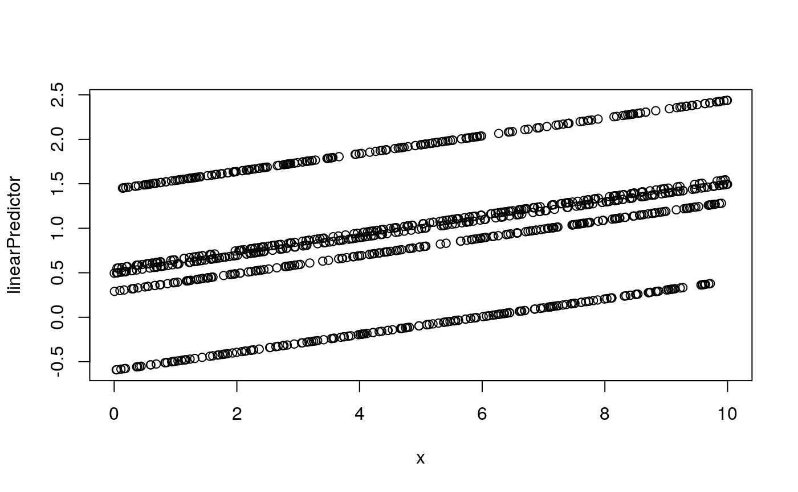
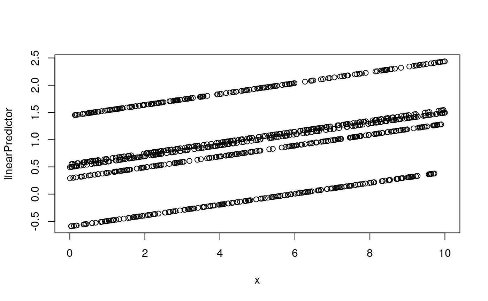
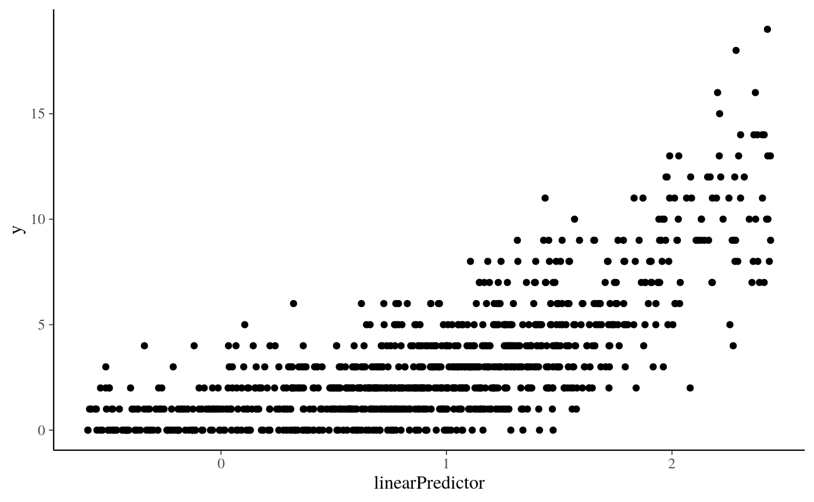
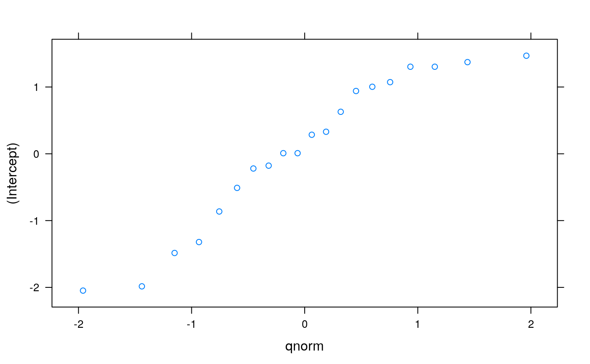
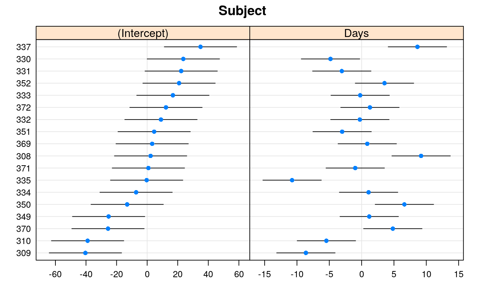
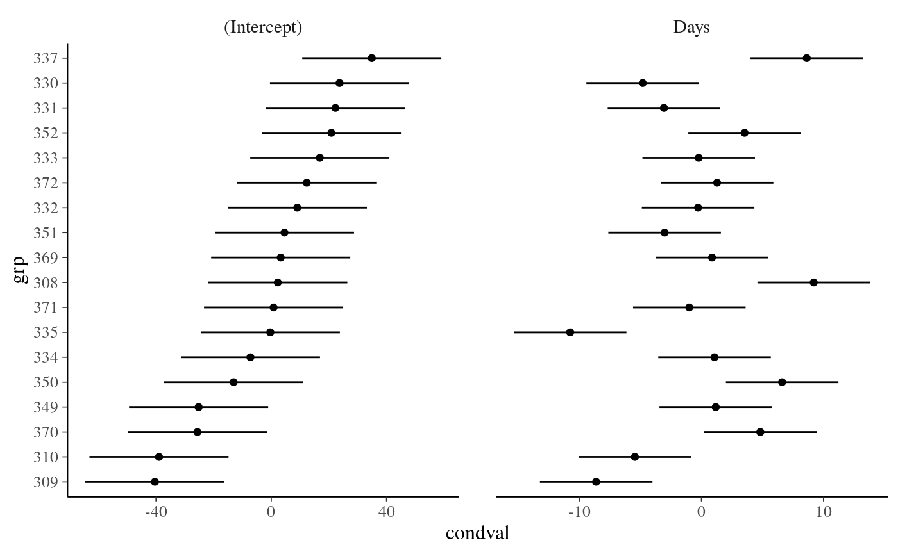

Count Regression Part III - Heirarchical / Mixed Effects
A tutorial on count regression
Bruce Campbell
24 July, 2019
count-regression-hierarchical-mixedeffect-partII-vignettes.Rmd##Bayesian Approaches to Count Regression
Please see the intorduction to count regression post for a review of count models from the maximum likelihood point o f view. Part 2 looks at the Bayesian implementation of count models. Here in Part III we look to understand heirarchical count models. Some discussion on the principles involved is warranted since the terminology can be confusing. There are Bayesian and frequentist approches to this - each with their own terminology.
Without random coefficients, the standard Poisson model is:
\[ \log E(y_{i}) = \alpha + X'_{i} \beta \]
The log link is the canonical link function for the Poisson distribution, and the expected value of the response is modeled.
With random coefficients, for example a random intercept, the model becomes:
\[ \log E(y_{ij}|u_{j}) = \alpha + X'_{ij} \beta + u_{j} \]
Where \(y_{ij}\) is the observation for individual (i) in group (j) and \(u_{j}\) is the random effect for group (j). Thus the two distributions are:
\[ y \sim Pois(\lambda) \]
and
\[ u \sim N(0, \sigma^{2}) \]
The random coefficient model is conditional on the random effect. Consider a simple model:
\[ \log E(y_{ij}|u_{j}) = -.5 + .3x_{ij} + u_{j} \]
In the original units, this becomes:
\[ E(y_{ij}|u_{j}) = \exp(-.5 + .3x_{ij} + u_{j}) \]
Now look what happens when we graph the estimated change for a 1 unit change in x for values of the random variable (u) ranging from 0 to 4 by increments of .5.
par(mfrow = c(1, 1))
f <- function(x_ij, u_j) {
exp(-0.5 + x_ij * 0.3 + u_j)
}
for (i in seq(0, 4, 0.5)) {
curve(f(x, u_j = i), from = 0, to = 1, n = 200, add = i > 0, ylim = c(0,
45), ylab = "")
}
title(ylab = bquote(E(Y ~ l ~ x[ij], u[j])), main = "Effect of x for different random effects")
Clearly, on the scale of the original units, a 1 unit increase in x has different effects depending on the value of u, hence the conditionalness of the model. Population average effects can be obtained by integrating out the random effect or by fitting a marginal model such as using GEEs. Although the outcome is assumed to have a Poisson distribution, the random effect (in the above example, u) is typically assumed to have a Gaussian distribution.
##Generate synthetic data \(y_{ij} \sim \;\; e^{\beta_0 + Z_i b + \beta_1 x_{ij}}\)
 

[1] 0.4338723Factors are dropped from the summary
| N | Mean | SD | Min | Q1 | Median | Q3 | Max | |||
|---|---|---|---|---|---|---|---|---|---|---|
| y | 1000 | 3.21 | 3.01 | 0 | 1 | 2 | 4 | 19 | ||
| x | 1000 | 4.92 | 2.92 | 0 | 2.3 | 4.91 | 7.47 | 10 | ||
| fixed | 1000 | 0.24 | 0.65 | -0.79 | 0.09 | 0.29 | 0.35 | 1.24 | ||
| linearPredictor | 1000 | 0.93 | 0.69 | -0.59 | 0.51 | 0.96 | 1.39 | 2.44 | ||
| mu | 1000 | 3.18 | 2.27 | 0.55 | 1.66 | 2.6 | 4.02 | 11.44 |

#Fit Poisson mixed effects model.
Generalized linear mixed model fit by maximum likelihood (Laplace
Approximation) [glmerMod]
Family: poisson ( log )
Formula: y ~ x + (x | groupIdx)
Data: modelling_data
AIC BIC logLik deviance df.resid
3672.8 3697.3 -1831.4 3662.8 995
Scaled residuals:
Min 1Q Median 3Q Max
-2.2160 -0.7547 -0.0778 0.5276 4.0711
Random effects:
Groups Name Variance Std.Dev. Corr
groupIdx (Intercept) 3.818e-01 0.617935
x 1.498e-05 0.003871 1.00
Number of obs: 1000, groups: groupIdx, 5
Fixed effects:
Estimate Std. Error z value Pr(>|z|)
(Intercept) 0.383072 0.280658 1.365 0.172
x 0.110423 0.007665 14.406 <2e-16 ***
---
Signif. codes: 0 '***' 0.001 '**' 0.01 '*' 0.05 '.' 0.1 ' ' 1
Correlation of Fixed Effects:
(Intr)
x 0.069
convergence code: 0
boundary (singular) fit: see ?isSingularvv <- vcov.merMod(m, corr = TRUE)
as(vv, "corMatrix") # extracts the ('hidden') 'correlation' entry in @factors2 x 2 Matrix of class "corMatrix"
(Intercept) x
(Intercept) 1.00000000 0.06919018
x 0.06919018 1.00000000Student Data Exaple
The example data we use comes from a sample of the high school and beyond data set, with a made up variable, number of awards a student receives, awards. Our main predictor will be sex, female, and students are clustered (grouped) within schools, cid.
# require(glmmADMB) load lme4 package
require(lme4)
## read in data
dat <- read.dta("https://stats.idre.ucla.edu/stat/data/hsbdemo.dta")
dat$cid <- factor(dat$cid)
## look at the first few rows of the dataset
head(dat) id female ses schtyp prog read write math science socst
1 45 female low public vocation 34 35 41 29 26
2 108 male middle public general 34 33 41 36 36
3 15 male high public vocation 39 39 44 26 42
4 67 male low public vocation 37 37 42 33 32
5 153 male middle public vocation 39 31 40 39 51
6 51 female high public general 42 36 42 31 39
honors awards cid
1 not enrolled 0 1
2 not enrolled 0 1
3 not enrolled 0 1
4 not enrolled 0 1
5 not enrolled 0 1
6 not enrolled 0 1We can get a sense of the distributions in the data using the ggplot2 package. The first plot is just histograms of number of awards for every cid. The second is a filled density plot. The density sums to 1 and the fill shows the distribution of female at every level of awards. If the distribution of female is equal across all awards, they would fall on the horizontal line.
awards by school


# density of awards by sex, line at .5 is the null of no sex differences in
# number of awards
ggplot(dat, aes(factor(awards))) + geom_bar(aes(fill = female), position = "fill") +
geom_hline(yintercept = 0.5)
Analysis methods you might consider - Random coefficient poisson models, the focus of this page. - Poisson regression with robust standard errors - Random coefficient poisson model analysis - Because generalized linear mixed models (GLMMs) such as random coefficient poisson models are rather difficult to fit, there tends to be some variability in parameter estimates between different programs. We will demonstrate the use of two packages in R that are able to fit these models, lme4 and glmmADMB.
## fit a random intercept only model using the Laplace approximation
## (equivalent to 1 point evaluated per axis in Gauss-Hermite approximation)
m1a <- glmer(awards ~ 1 + (1 | cid), data = dat, family = poisson(link = "log"))
## fit a random intercept only model using 100 points per axis in the
## adaptive Gauss-Hermite approximation of the log likelihood more points
## improves accuracy but will take longer
m1b <- glmer(awards ~ 1 + (1 | cid), data = dat, family = poisson(link = "log"),
nAGQ = 100)
## compare (only slightly different)
rbind(m1a = coef(summary(m1a)), m1b = coef(summary(m1b))) Estimate Std. Error z value Pr(>|z|)
(Intercept) -0.008100387 0.2864037 -0.02828311 0.9774364
(Intercept) -0.009574892 0.2902939 -0.03298344 0.9736878Generalized linear mixed model fit by maximum likelihood (Adaptive
Gauss-Hermite Quadrature, nAGQ = 100) [glmerMod]
Family: poisson ( log )
Formula: awards ~ 1 + (1 | cid)
Data: dat
AIC BIC logLik deviance df.resid
228.6 235.2 -112.3 224.6 198
Scaled residuals:
Min 1Q Median 3Q Max
-1.3857 -0.5260 -0.3383 0.3379 3.3769
Random effects:
Groups Name Variance Std.Dev.
cid (Intercept) 1.458 1.207
Number of obs: 200, groups: cid, 20
Fixed effects:
Estimate Std. Error z value Pr(>|z|)
(Intercept) -0.009575 0.290294 -0.033 0.974$cid
$cid
The estimate for the intercept is essentially 0, although the random effects variance indicates that there is some variability in the intercepts between schools. Now we will add in female as an explanatory variable.
m2 <- glmer(awards ~ 1 + female + (1 | cid), data = dat, family = poisson(link = "log"),
nAGQ = 100)
summary(m2)Generalized linear mixed model fit by maximum likelihood (Adaptive
Gauss-Hermite Quadrature, nAGQ = 100) [glmerMod]
Family: poisson ( log )
Formula: awards ~ 1 + female + (1 | cid)
Data: dat
AIC BIC logLik deviance df.resid
221.1 231.0 -107.6 215.1 197
Scaled residuals:
Min 1Q Median 3Q Max
-1.5312 -0.5919 -0.3304 0.2047 2.8806
Random effects:
Groups Name Variance Std.Dev.
cid (Intercept) 1.431 1.196
Number of obs: 200, groups: cid, 20
Fixed effects:
Estimate Std. Error z value Pr(>|z|)
(Intercept) -0.2229 0.2975 -0.749 0.45370
femalefemale 0.3632 0.1193 3.044 0.00234 **
---
Signif. codes: 0 '***' 0.001 '**' 0.01 '*' 0.05 '.' 0.1 ' ' 1
Correlation of Fixed Effects:
(Intr)
femalefemal -0.252There appears to be a fairly strong effect of females such that females tend to get more awards than males. Now we will fit the same models using the glmmADMB package
## random intercept only model library(glmmADMB) m.alt1 <- glmmadmb(awards ~
## 1 + (1 | cid), data = dat, family = 'poisson', link = 'log') m.alt2 <-
## glmmadmb(awards ~ 1 + female + (1 | cid), data = dat, family = 'poisson',
## link = 'log') summary(m.alt1)The results from glmmadmb match closely with those from glmer.
Sleep Study Example
library(lme4)
require(lattice)
fm1 <- lmer(Reaction ~ Days + (Days | Subject), sleepstudy)
fm2 <- lmer(Reaction ~ Days + (1 | Subject) + (0 + Days | Subject), sleepstudy)
fm3 <- lmer(diameter ~ (1 | plate) + (1 | sample), Penicillin)
ranef(fm1)$Subject
(Intercept) Days
308 2.2575329 9.1992737
309 -40.3942719 -8.6205161
310 -38.9563542 -5.4495796
330 23.6888704 -4.8141448
331 22.2585409 -3.0696766
332 9.0387625 -0.2720535
333 16.8389833 -0.2233978
334 -7.2320462 1.0745075
335 -0.3326901 -10.7524799
337 34.8865253 8.6290208
349 -25.2080191 1.1730997
350 -13.0694180 6.6142185
351 4.5777099 -3.0152825
352 20.8614523 3.5364062
369 3.2750882 0.8722876
370 -25.6110745 4.8222518
371 0.8070591 -0.9881730
372 12.3133491 1.2842380
with conditional variances for "Subject" List of 1
$ Subject:'data.frame': 18 obs. of 2 variables:
..$ (Intercept): num [1:18] 2.26 -40.39 -38.96 23.69 22.26 ...
..$ Days : num [1:18] 9.2 -8.62 -5.45 -4.81 -3.07 ...
..- attr(*, "postVar")= num [1:2, 1:2, 1:18] 145.69 -21.44 -21.44 5.31 145.69 ...
- attr(*, "class")= chr "ranef.mer"$Subject
## specify free scales in order to make Day effects more visible
dotplot(rr1, scales = list(x = list(relation = "free")))[["Subject"]]
$Subject
(Intercept) Days
308 1.5116973 9.3237308
309 -40.3720066 -8.5995358
310 -39.1795117 -5.3880715
330 24.5188072 -4.9686809
331 22.9141930 -3.1939310
332 9.2217762 -0.3084673
333 17.1557243 -0.2871512
334 -7.4516633 1.1159907
335 0.5798353 -10.9062401
337 34.7661741 8.6279628
349 -25.7538155 1.2806250
350 -13.8653871 6.7565202
351 4.9161750 -3.0751926
352 20.9281601 3.5123758
369 3.2584763 0.8730848
370 -26.4756822 4.9838147
371 0.9057286 -1.0053150
372 12.4213189 1.2584805
with conditional variances for "Subject" $plate
a b c d e f g h
0.80454 0.80454 0.18167 0.33739 0.02595 -0.44120 -1.37551 0.80454
i j k l m n o p
-0.75264 -0.75264 0.96026 0.49311 1.42742 0.49311 0.96026 0.02595
q r s t u v w x
-0.28548 -0.28548 -1.37551 0.96026 -0.90836 -0.28548 -0.59692 -1.21979
attr(,"postVar")
[1] 0.07363 0.07363 0.07363 0.07363 0.07363 0.07363 0.07363 0.07363
[9] 0.07363 0.07363 0.07363 0.07363 0.07363 0.07363 0.07363 0.07363
[17] 0.07363 0.07363 0.07363 0.07363 0.07363 0.07363 0.07363 0.07363
$sample
A B C D E F
2.18706 -1.01048 1.93790 -0.09689 -0.01384 -3.00374
attr(,"postVar")
[1] 0.04087 0.04087 0.04087 0.04087 0.04087 0.04087
with conditional variances for "plate" "sample" options(op)
## as.data.frame() provides RE's and conditional standard deviations:
str(dd <- as.data.frame(rr1))'data.frame': 36 obs. of 5 variables:
$ grpvar : chr "Subject" "Subject" "Subject" "Subject" ...
$ term : Factor w/ 2 levels "(Intercept)",..: 1 1 1 1 1 1 1 1 1 1 ...
$ grp : Factor w/ 18 levels "309","310","370",..: 9 1 2 17 16 12 14 6 7 18 ...
$ condval: num 2.26 -40.39 -38.96 23.69 22.26 ...
$ condsd : num 12.1 12.1 12.1 12.1 12.1 ...if (require(ggplot2)) {
ggplot(dd, aes(y = grp, x = condval)) + geom_point() + facet_wrap(~term,
scales = "free_x") + geom_errorbarh(aes(xmin = condval - 2 * condsd,
xmax = condval + 2 * condsd), height = 0)
}
Experiment with regressions (mixed models or interaction terms):
# Load packages:
library(caret)
# Set seed to insure reproducability:
set.seed(1)
# Split randomly into training and testing:
training_indices = sample(size = round(dim(modelling_data)[1]/10), x = 1:dim(modelling_data)[1],
replace = FALSE)
modelling_data = modelling_data[training_indices, ]
modelling_data_test = modelling_data[-training_indices, ]
# Compare held out performance of random slopes against interaction term:
interaction_model = glm(y ~ x:groupIdx, modelling_data, family = "poisson")
random_slopes_model = glmer(y ~ x | groupIdx, modelling_data, family = "poisson")
confusion_matrix_interaction_model = confusionMatrix(data = as.factor(as.logical(predict(interaction_model,
newdata = modelling_data_test[, -which(names(modelling_data_test) == "y")],
type = "response") > 0.5)), reference = as.factor(as.logical(modelling_data_test$y >
0)), positive = "TRUE")
confusion_matrix_random_slopes_model = confusionMatrix(data = as.factor(as.logical(predict(random_slopes_model,
newdata = modelling_data_test[, -which(names(modelling_data_test) == "y")],
type = "response") > 0.5)), reference = as.factor(as.logical(modelling_data_test$y >
0)), positive = "TRUE")
confusion_matrix_interaction_modelConfusion Matrix and Statistics
Reference
Prediction FALSE TRUE
FALSE 0 0
TRUE 11 82
Accuracy : 0.8817
95% CI : (0.7982, 0.9395)
No Information Rate : 0.8817
P-Value [Acc > NIR] : 0.579424
Kappa : 0
Mcnemar's Test P-Value : 0.002569
Sensitivity : 1.0000
Specificity : 0.0000
Pos Pred Value : 0.8817
Neg Pred Value : NaN
Prevalence : 0.8817
Detection Rate : 0.8817
Detection Prevalence : 1.0000
Balanced Accuracy : 0.5000
'Positive' Class : TRUE
Confusion Matrix and Statistics
Reference
Prediction FALSE TRUE
FALSE 0 0
TRUE 11 82
Accuracy : 0.8817
95% CI : (0.7982, 0.9395)
No Information Rate : 0.8817
P-Value [Acc > NIR] : 0.579424
Kappa : 0
Mcnemar's Test P-Value : 0.002569
Sensitivity : 1.0000
Specificity : 0.0000
Pos Pred Value : 0.8817
Neg Pred Value : NaN
Prevalence : 0.8817
Detection Rate : 0.8817
Detection Prevalence : 1.0000
Balanced Accuracy : 0.5000
'Positive' Class : TRUE
# and of random intercepts against both terms:
two_predictors = glm(y ~ x:groupIdx, modelling_data, family = "poisson")
random_intercepts_model = glmer(y ~ x | groupIdx, modelling_data, family = "poisson")
confusion_matrix_two_predictors = confusionMatrix(data = as.factor(as.logical(predict(two_predictors,
newdata = modelling_data_test[, -which(names(modelling_data_test) == "y")],
type = "response") > 0.5)), reference = as.factor(as.logical(modelling_data_test$y >
0)), positive = "TRUE")
confusion_matrix_random_intercepts_model = confusionMatrix(data = as.factor(as.logical(predict(random_intercepts_model,
newdata = modelling_data_test[, -which(names(modelling_data_test) == "y")],
type = "response") > 0.5)), reference = as.factor(as.logical(modelling_data_test$y >
0)), positive = "TRUE")
confusion_matrix_two_predictorsConfusion Matrix and Statistics
Reference
Prediction FALSE TRUE
FALSE 0 0
TRUE 11 82
Accuracy : 0.8817
95% CI : (0.7982, 0.9395)
No Information Rate : 0.8817
P-Value [Acc > NIR] : 0.579424
Kappa : 0
Mcnemar's Test P-Value : 0.002569
Sensitivity : 1.0000
Specificity : 0.0000
Pos Pred Value : 0.8817
Neg Pred Value : NaN
Prevalence : 0.8817
Detection Rate : 0.8817
Detection Prevalence : 1.0000
Balanced Accuracy : 0.5000
'Positive' Class : TRUE
Confusion Matrix and Statistics
Reference
Prediction FALSE TRUE
FALSE 0 0
TRUE 11 82
Accuracy : 0.8817
95% CI : (0.7982, 0.9395)
No Information Rate : 0.8817
P-Value [Acc > NIR] : 0.579424
Kappa : 0
Mcnemar's Test P-Value : 0.002569
Sensitivity : 1.0000
Specificity : 0.0000
Pos Pred Value : 0.8817
Neg Pred Value : NaN
Prevalence : 0.8817
Detection Rate : 0.8817
Detection Prevalence : 1.0000
Balanced Accuracy : 0.5000
'Positive' Class : TRUE
The simulated data are generated with 5 random intercepts and a shared slope for the log rate in a Poisson regression. On this simulated data, the random slopes performs slightly better on test data than the interacting predictors model. The random intercepts performs slightly better on test data than the two predictors model.